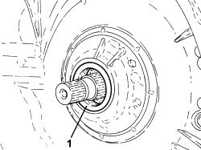

2130B62 OIL SEAL FOR TRANSMISSION INPUT SHAFT - REPLACE WITH AUTOMATIC TRANSMISSION REMOVED
- Path
- Procedures > 21 GEARBOX UNIT > 2130 AUTOMATIC TRANSMISSION WITH DIFFERENTIAL > 2130B AUTOMATIC TRANSMISSION COMPONENTS > 2130B62 OIL SEAL FOR TRANSMISSION INPUT SHAFT - REPLACE WITH AUTOMATIC TRANSMISSION REMOVED
- Kind
- repair procedure (removal / refitting; the operation number is the code)
- Applies to
- engines: 3.2 JTS; all production periods
- Interactive page
- https://sloeber94.github.io/elrnDB-aBrrSpdr/en/#/946004461
Applies to: engines: 3.2 JTS; all production periods
 Removing
Removing
 Refitting
Refitting1. Remove the pump case oil seal.

Applies to: engines: 3.2 JTS; all production periods
Refitting
Removing- Moisten a new shaft oil seal with transmission fluid.
- Fit the oil seal using the special tool.